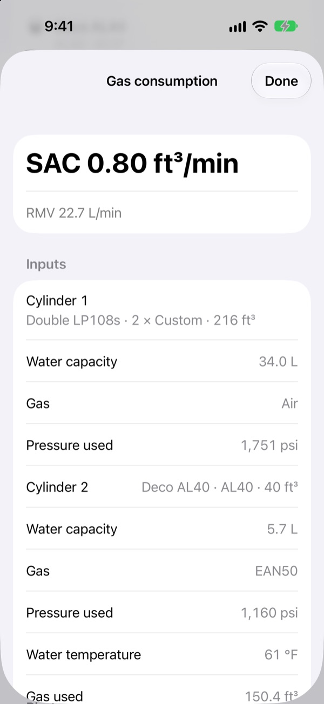

First, update every device
Many problems go away when every device runs the latest build. Open TestFlight on each iPhone, iPad and Mac you use and install any update. An older build stops sending changes until it's updated, and says Update Thermocline to keep syncing. Your changes are kept and send after updating.
Downloads from a dive computer
The computer isn't found
- Wake the computer and put it in its Bluetooth mode (Shearwater: Menu → Bluetooth). It only stays there about two minutes.
- Hold it close to the iPhone, iPad or Mac.
- Shearwater computers go back to the last device they used. If your phone or another Mac is nearby, turn Bluetooth off on that device, then try again.
- Check Bluetooth is on, and that Thermocline is allowed to use it (iPhone: Settings → Thermocline; Mac: System Settings → Privacy & Security → Bluetooth).
It's a Predator or Petrel 1 and the iPhone can't see it
These use older Bluetooth (Bluetooth Classic) that iPhones and iPads can't use. Download them on the Mac (see the guide), or import their dives from Shearwater Cloud or a UDDF file.
It connects but asks for a PIN
Type the code shown on the computer's screen. It's only needed the first time.
"No new dives"
Only dives newer than your last download are fetched. If you deleted a dive and want it back, turn on Download every dive on the computer and download again. Dives already in your logbook are skipped.
The download stopped part way
Choose Keep to save the dives that arrived, then download again for the rest. If it keeps stopping, choose Try again close to the computer, and send the download log.
A cable download fails on the Mac
- Check the port matches the cable: the list says which kind each port is, and warns when it's not for the model you chose.
- Unplug and replug the cable, then use the refresh button to look for cables again.
- Follow the Before you start steps for your model.
- Cable downloads are new. Please send the download log either way.
Sync between devices
My iPhone app says Thermocline is now one app, or I see two Thermocline apps
On 18 November 2026 the iPhone, iPad, Mac and Apple Watch apps became one app, with one beta link. The iPhone app you had before only helps you move now.
- Open the old app. If it says sync is off, tap Turn on Sync with iCloud and leave it open for a minute, or tap Export my logbook as UDDF and save the file.
- Tap Join the new beta, or open the beta link on your iPhone, and install the new app. It sits beside the old one.
- In the new app, turn on Profile → Sync with iCloud. Your dives, sites, gear and settings come back. If you exported instead, use Profile → Import a logbook file.
- You may need to pair your dive computer again, and install the Watch app again from the Watch app on your iPhone.
- When the new app shows the same dives, delete the old one.
On a Mac, nothing changes: keep updating the Mac app as usual.
Dives are missing or doubled after a sync
- Don't change anything yet. Take a screenshot of the Sync section (iPhone: Profile → Sync; Mac: Thermocline → Settings → Sync) on each device and send it.
- Check every device is on the latest build.
- Profile → Your data → Restore points can take your logbook back to before an import, merge or deletion. Restoring saves your current logbook first, so it can be undone.
A change on one device doesn't show on the other
- Check Sync with iCloud is on on both, signed in to the same Apple Account.
- Look at Waiting to send on the device where you made the change, and open the app on both with a signal. The Sync section says when this device and your others match.
- Press Sync now.
"Not signed in to iCloud"
Sign in to iCloud in the device's Settings. Until then your logbook stays on that device, safe, and syncs once you're signed in.
"Your iCloud storage is full"
Your logbook is safe on the device and syncs when there's room. Free some iCloud space, or turn on Save iCloud storage on dive photos so photos aren't stored twice.
"Another device uses a newer version"
Update Thermocline on this device in TestFlight. Your changes are safe here and send after updating.
Imports
Some dives or details didn't come in
The import report lists everything under Not imported and Please check, with the reason. Every logbook writes UDDF a little differently, so missing values are normal and stay blank. If something you expected is missing, send the report and, if you can, the file.
My MacDive gear, photos or dive types are missing
MacDive's UDDF export leaves those out. Import its XML on top for gear, tags and dive types, and on the Mac import MacDive's folder for photos. Dives already in your logbook aren't added twice. See Which MacDive file to use.
NDL, ppO₂ or CNS is missing on dives from MacDive
The dive page shows NDL as "—" and Deco as "Not recorded", or ppO₂ says "Calculated from gas and depth". MacDive's UDDF export doesn't include the computer's NDL, ppO₂ or CNS. Its folder has no profile for dives MacDive downloaded on an iPhone or iPad, because it stores those encrypted.
Import MacDive's XML too: it fills in what's missing without adding dives again. See Which MacDive file to use.
Will moving between files or apps lose anything?
- Your original files are never changed. Keep your MacDive exports, and keep MacDive itself until you've compared a few dives.
- A second import adds, it doesn't replace. Dives already in your logbook are matched and only gain what they're missing, so you can import the XML after the UDDF, or the folder after either.
- You can go back. A restore point named Before an import is saved before any import of more than one dive (Profile → Your data → Restore points on iPhone, Settings → Restore Points on the Mac). On the Mac, Undo Import… in the report also takes it back.
- Leaving Thermocline: its UDDF export is the complete one. It includes the computer's NDL, ppO₂ and CNS along each dive, gear, tags, dive types and video links. Photos aren't inside any export file.
Imported dives have no gas
The file didn't say which gas was used. Those dives wait in To confirm so you can set it.
I imported the wrong file
On the Mac, use Undo Import… in the import report. On either device, a restore point named Before an import is saved before any import of more than one dive.
A Garmin file won't import
- "That's a zip file": Garmin Connect's Export Original gives a .zip. Unzip it, then choose the .fit file inside.
- "This isn't a Garmin FIT file": the file isn't from a Garmin watch, or only its name ends in .fit. Use the file from the watch's GARMIN → Activity folder, or Export Original.
- "Garmin files hold no dive": runs, walks, settings and health files are skipped. Only dives come in.
- "Look cut short or damaged": the file stopped part way, often from a copy or download that didn't finish. What could be read is shown; copy the file again from the watch and re-import to get the rest. Dives already in your logbook are skipped.
- Choosing a Garmin file with another logbook file isn't possible in one go: import the logbook file, then the Garmin files.
A Garmin dive asks me to check its tanks
With more than one tank transmitter, Garmin's file doesn't say which gas each one was on, so they were matched to the dive's tanks in order. Open the dive's gas section and make sure each pressure is on the right tank.
A Garmin dive's time is an hour off
The time comes from the watch's clock. If it wasn't set to local time where you dived, the dive shows at the watch's time. Edit the dive's time, or set the watch's time zone before the next trip.
A drift dive has the wrong site
A dive is matched to the nearer of where you went in and where you came up, which on a drift is usually where you went in. If it matched the wrong site or none, choose the site on the dive, and add any other wrecks you passed to the notes.
Gas use and SAC
A SAC figure looks wrong
Tap or click How? next to it. It shows every input: the cylinder and its water capacity, pressures, temperature, the real-gas correction, time and depth. The usual culprit is a wrong cylinder size; fix it in Gear. Send a screenshot of the How? screen if it still looks off.

There's no SAC, only a message
- Add the cylinder size to see SAC: choose the tank's model or enter its size.
- Add start and end pressures to see SAC: there's no transmitter, so enter them on the tank.
- SAC needs a depth profile: dives logged by hand without a profile have no SAC.
- Rebreather dives don't get a SAC figure.
SAC only counts one tank
On a dive with several gases, only the tank with the transmitter has pressures. Enter start and end pressures on the other tank and SAC covers all the gas.
Summary's Breathing says no dive has a tank size
Breathing averages only dives with a tank size and start and end pressures. Dives from MacDive's UDDF have no tank size, because its sizes aren't water capacities; importing the XML on top fills them in (see Which MacDive file to use). Otherwise set the tank on your dives (choose its model, or a gear set) and add pressures where you have them. Under the figure, Breathing says how many dives weren't counted.

Photos
A photo doesn't show on my other device
With Save iCloud storage on dive photos on, a photo keeps its copy until your other device finds it in iCloud Photos. Turn the setting on on both devices, check iCloud Photos is on for both, and give it time to upload.
Videos weren't added
Videos from your library can only be linked, not copied. Turn on Sync → Save iCloud storage on dive photos, and make sure the video is in iCloud Photos. Or paste a YouTube or Vimeo link under the dive's photos.
"Thermocline can't read your photos"
Photos access was refused, so photos are copied instead of linked. To link them, allow access in Settings → Privacy & Security → Photos → Thermocline.
Sites and the Apple Watch
The suggested site is wrong, or there isn't one
Choose a different site, search the built-in lists by name, or mark or type the position yourself. Inland quarries and lakes are often missing from public lists, so your own sites come first in suggestions from then on.
Thermocline isn't on my Apple Watch
The Watch app comes with the iPhone app from TestFlight. On your iPhone, open the Watch app, find Thermocline under Available Apps and tap Install. It needs watchOS 11 or later. If you moved from the old iPhone app, install it again: the old Watch app belongs to the old iPhone app.
The watch says "Waiting for a good fix" and Mark spot stays grey
A spot is saved only from a fix within ±30 m and under 30 seconds old, so a wrong position never reaches your logbook. Stay at the surface with the watch out of the water and a clear view of the sky, and give it a minute. Ignoring an old cached position means it's waiting for a fresh one. GPS doesn't work underwater: mark the spot before you descend or when you surface.
"Location access is off for Thermocline" on the watch
On the watch, open Settings → Privacy & Security → Location Services, turn Location Services on and allow Thermocline while using the app.
A spot marked on the Watch didn't appear on the iPhone
On the watch, open Marked spots. Waiting to send to iPhone means the iPhone hasn't had it yet: keep the watch near your iPhone and open Thermocline on the iPhone. Sent to iPhone means it's there: look in Logbook → To confirm. The iPhone looks the spot up when it's online, so with no signal it waits with waiting for signal to look up.
The watch didn't show a site name after I marked a spot
The name comes from your iPhone: when it's nearby with Thermocline able to answer, the watch shows the site it would suggest under the spot, yours or one from the dive-site lists, with how far away it is. With the iPhone out of reach, the watch names your own sites from the copy your iPhone left on it, but not the dive-site lists. With no site within about 1.5 km, the spot is marked without a name. Either way you choose the site on the iPhone, in Logbook → To confirm.
The name I said on the watch didn't save
The name saves when the dictation or keyboard closes, or when you go back. Open Marked spots, tap the spot and check its name; tap Change the name to try again. If the spot was already sent, the name follows it to the iPhone.
Does the watch record my dives?
No. The Thermocline Watch app only marks spots at the surface. Your dives come from your dive computer. For Garmin Descent watches, import their .fit files: see Garmin Descent in the guide.
A spot disappeared from the watch
That's expected. A spot leaves the watch once it's confirmed or discarded on the iPhone. A confirmed spot is a site in your logbook and syncs to your other devices.
Send a report or a download log
- From the app: take a screenshot, then use Share Beta Feedback in TestFlight. It arrives with the build and device attached.
- Download log, iPhone: on the download screen, tap Download log, then share it. It lists Bluetooth and computer messages only, with no dive data.
- Download log, Mac: in the download window, choose Download Log…, then Save Log…, and attach the file.
- Email: brian@616labs.net, with your device, the build number (shown in TestFlight) and what you expected to happen.